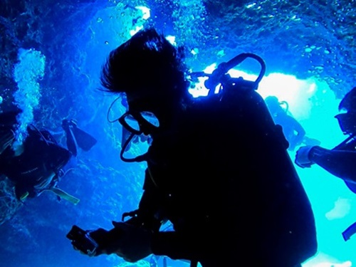
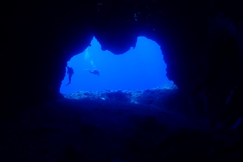
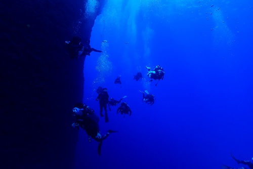

|  |
사이판의 바다는 감탄의 연속입니다. 어딜 가든 새파랗고 맑아 수심 60미터 아래 바닥도 훤히 보일 정도입니다. |
|  |
이곳은 '그루토'라는 세계 다이빙 5대 명소 중 하나입니다. 동굴 안에서 입구를 바라보면 이보다 영롱한 곳은 없을 것이라고 느껴집니다. 간혹 동굴 안에는 화이트 팁 샤크도 돌아다니니 진귀한 경험을 할 수도 있습니다. |
|  |
사이판의 '월 다이빙'은 정말 매력적입니다. 한쪽으로는 수십미터의 절벽을 끼고 돌며 온갖 산호와 바다생물을 볼 수 있습니다. 반대쪽은 끝없이 펼쳐진 푸른 바다가 있고 아래를 내려다보면 바닥도 잘 보이지 않을 정도로 깊은 바다가 있습니다. 마치 우주를 떠다니는 기분이 드는 경험입니다. |